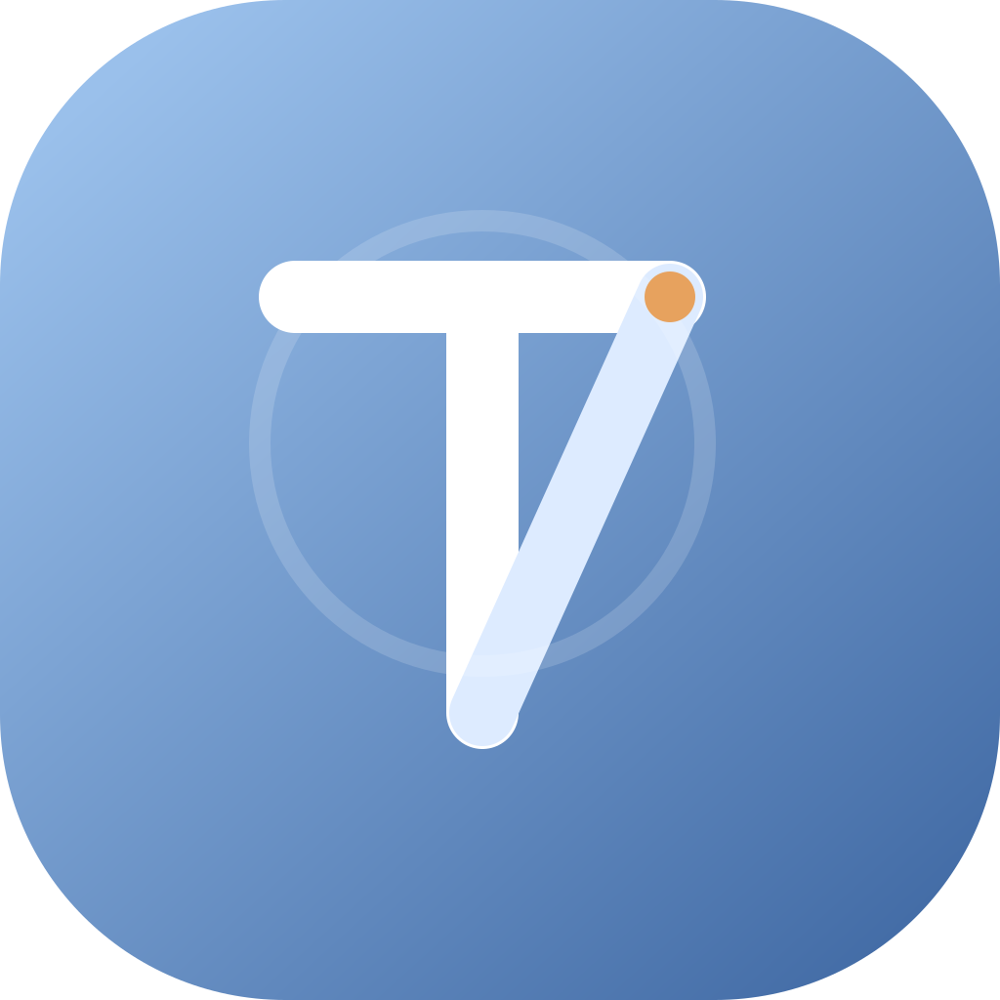
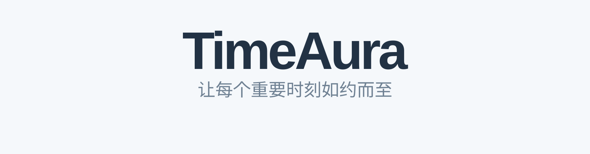
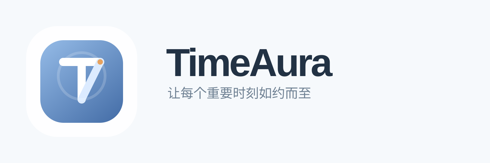

TimeAura B2 Logo Suite
这一套已经按“桌面应用图标 + 品牌字标 + 横版锁定 + 深浅主题”整理完成，并把圆弧升级成完整圆环，方便继续做启动或 hover 动画。
APP ICON
SYMBOL + WORDMARK

Symbol 独立图形版，适合 favicon、菜单栏、小尺寸角标。
Wordmark / Light 用于浅色页面、官网页头、产品介绍页。HORIZONTAL LOCKUP

Horizontal Lockup / Light 适合 PRD 封面、品牌页、落地页头部。ANIMATION PREVIEW
打开动画预览
Animation Demo
打开下方独立文件可直接预览启动动画和 hover 动效。
docs/logo-options/b2-suite/timeaura-b2-animation-demo.html